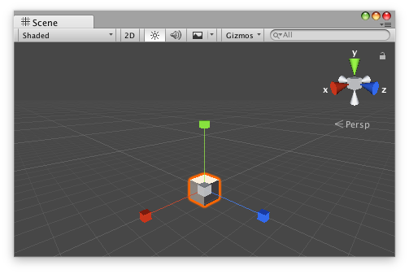

Handles.ScaleHandle
public static Vector3 ScaleHandle(Vector3 scale,
Vector3 position,
Quaternion rotation,
float size);
Parameters
| scale | Scale to modify. | |
| position | The position of the handle. | |
| rotation | The rotation of the handle. | |
| size | Allows you to scale the size of the handle on-scren. |
Returns
Vector3 The new value modified by the user's interaction with the handle. If the user has not moved the handle, it will return the same value as you passed into the function.
Description 描述
Make a Scene view scale handle.
This will behave like the built-in scale tool
Note: Use HandleUtility.GetHandleSize where you might want to have constant screen-sized handles.

Scale handle that will appear whenever you select the GameObject.
// Name this script "ScaleAtPointEditor" using UnityEngine; using UnityEditor;
[CustomEditor(typeof(ScaleAtPoint))] [CanEditMultipleObjects] public class ScaleAtPointEditor : Editor { public void OnSceneGUI() { ScaleAtPoint t = (target as ScaleAtPoint);
EditorGUI.BeginChangeCheck(); Vector3 scale = Handles.ScaleHandle(t.scale, Vector3.zero, Quaternion.identity, 1); if (EditorGUI.EndChangeCheck()) { Undo.RecordObject(target, "Scaled ScaleAt Point"); t.scale = scale; t.Update(); } } }
And the script Attached to this GameObject:
// Name this script "ScaleAtPoint" using UnityEngine; [ExecuteInEditMode] public class ScaleAtPoint : MonoBehaviour { public Vector3 scale = Vector3.one; public void Update() { transform.localScale = scale; } }